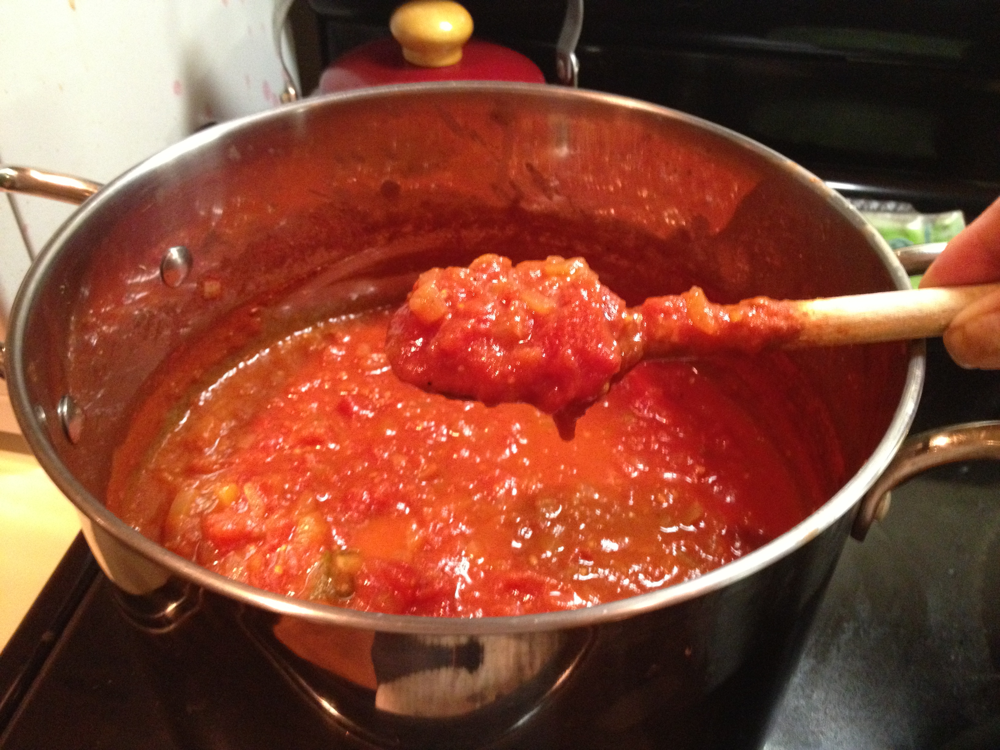

Papa's Red Sauce

Description
A traditional family recipe passed on through generations.
A great dish year-round.
Ingredients
- 1 Onion, Diced
- Red Pepper Flakes
- Minced Garlic
- Tomato Paste
- Oregano, Basil, Salt, and Pepper
- Red Wine
- Canned Tomato
Steps
- Sautee onion until translucent, add garlic and pepper flakes.
- Once the sharp frangrance of the garlic subsides, add tomato paste, herbs, and spices.
- As the tomato paste begins to brown and darken, de glase with red wine.
- As paste forms add tomatoes.
- Crush tomatoes to release juices and stir. Add a half can of water.
- Bring to boil then lower temperature and simmer for 30 minutes.
- Serve hot with bread or pasta. Cheese optional.